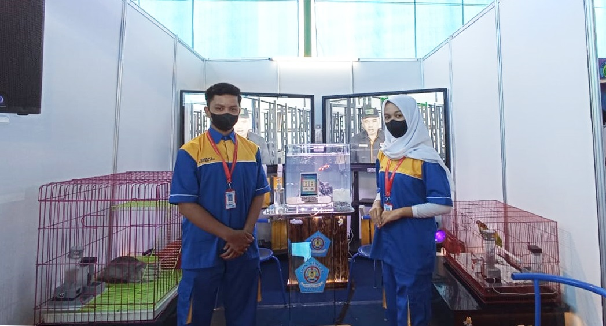
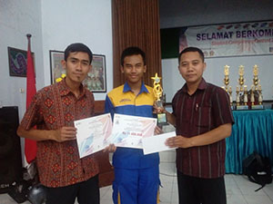

Sekilas Pandang Jurusan RPL SMKN 1 Kepanjen

.png)
.png)
Profil : Program Keahlian RPL mempelajari semua cara mengembangkan perangkat lunak. Program keahlian ini berkaitan dengan Software Computer mulai dari pembuatan website, mobile application, aplikasi, game dan semua yang berkaitan dengan pemrograman. Sehingga lulusan RPL bisa menjadi seorang developer yang handal.
Visi RPL : Mencetak lulusan berkualitas dengan kompetensi di bidang rekayasa perangkat lunak, pemrpgraman dan web, yang dilandasi akhlak mulia serta mampu berkompetisi di era globalisasi.
Materi Pembelajaran : Web statis dan dinamis, Pemrograman Berorientasi Objek, Pemrograman desktop, Basis Data (Database), Pemrograman Dasar, dan Pemodelan Perangkat Lunak.
Peluang Kerja : Software Developer, Web Developer, Game Development, dan Software Tester, Software Engineering, Software Analis, Konsultan IP, programmer dan masih banyak lagi.
Kerjasama Dunia Usaha / Dunia Industri : PT. Yamaha Musical Product Indonesia (YMPI), Mikrotik Acamedy, DNA Initiative,CV. HUMMASOFT TECHNOLOGY dan PT. Surabaya Autocomp Indonesia.
Lomba/Event yang pernah diikuti siswa RPL (2 tahun terakhir) :
Lomba Kompetensi Siswa (LKS) Wilayah Kerja 3 Bidang Lomba Web Design dan Software Application (Nominator) Tahun 2019,
Bekraf for Pre-Startup (Bekup) tahun 2018,
LKS SMK Tingkat Kab. Malang Bidang Lomba Web Design dan Software Application (Juara 1) Tahun 2018,
LKS SMK Tingkat Prov. Jawa Timur Bidang Lomba Web Design dan Software Application (Juara) Tahun 2018.
LKS SMK Tingkat Nasional Bidang Lomba Software Application tahun 2018,
Lulusan (Alumni) siswa RPL : Melanjutkan studi di universitas negeri/swasta, berwirausaha dan bekerja.

